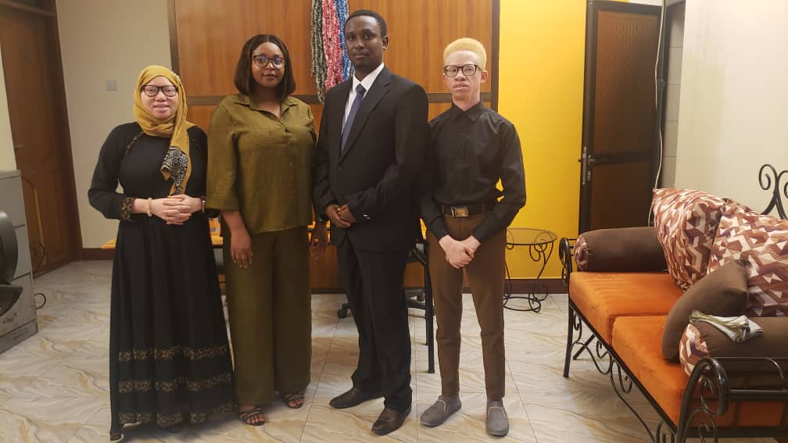
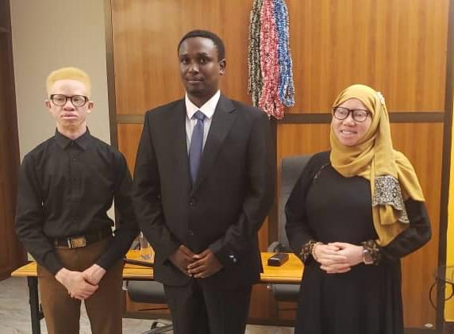

Stronger together: TASPO and SMOTA open a shared office
Two Tanzanian organisations, one shared goal – schools where students and teachers with albinism are safe, included and free to thrive.

Published November 2026 · TASPO – Tanzania Student Plan Organisation
Some partnerships just make sense. TASPO works inside Tanzania's schools. SMOTA has spent years standing beside families of children with albinism. Now the two organisations share a home – a new office in Dar es Salaam, officially inaugurated by TASPO's founder, Shilekirwamuu, and Amosi of SMOTA, together with Zainab Abdul and Upendo Peter Ndowo, alongside partners and friends.
Sharing a roof is more than a practical arrangement. It's a statement: when it comes to children and teachers with albinism, education and protection belong together.
Two organisations, one mission
SMOTA
Simama Na Mwanamke Organization Tanzania
Founded and registered in 2022, SMOTA supports mothers of children with albinism and their families across Tanzania – with awareness training, psychosocial support, economic empowerment and help accessing their rights, health care and education.
TASPO
Tanzania Student Plan Organisation
TASPO works with schools, teachers and students to create healthier, better-equipped classrooms – from sourcing equipment and supplies to projects like Whiteboards for All.
SMOTA knows the families. TASPO knows the schools. Together, we can reach the child in the classroom.
Why this matters
For a child with albinism, the challenges at school are often hidden in plain sight. Most people with albinism live with low vision, so a faint word on a dusty blackboard can simply disappear. Their skin is highly sensitive to the sun, which makes an outdoor assembly or a long walk to school a real risk. And in too many communities, harmful myths still lead to teasing, isolation or worse.
Teachers with albinism face many of the same barriers – yet they are also some of the most powerful role models a child can have.
Through our partnership, TASPO and SMOTA want to help schools get the basics right:
- Seeing the lesson clearlyClear, high-contrast boards, seats near the front, and large-print materials so low vision is never a barrier to learning.
- Staying safe in the sunShade, wide-brimmed hats and sunscreen, plus timetables that think twice about outdoor activities at midday.
- Classrooms free from stigmaAwareness sessions for teachers, pupils and parents that replace myths with facts and fear with friendship.
- Supporting teachers with albinismMaking sure educators with albinism have the tools and respect they need to lead their classrooms with confidence.
- Keeping families and schools connectedLinking SMOTA's work with mothers and families to TASPO's work with schools, so no child falls through the gap.
"Tokomeza Chaki, Okoa Maisha ya Mwalimu na Mwanafunzi"Eliminate chalk – protect the lives of teachers and students.
The theme of the day fits the partnership perfectly. Swapping chalk for clean whiteboards means healthier air for everyone – and clearer, sharper writing for students and teachers with low vision. One simple change, many lives improved.
Watch the inauguration
The opening ceremony was streamed live. If you missed it, you can watch it in full below.
Moments from the day

The road ahead
This office is where plans turn into action. From here, TASPO and SMOTA will work side by side – meeting schools, families and partners, and making sure every student and teacher with albinism has a fair chance to learn, teach and shine.
To everyone who joined us in the room or online, and to everyone who supports this work: asante sana. We're only getting started.
Help every child see their future clearly.
Your support helps TASPO and SMOTA build safer, more inclusive classrooms for students and teachers with albinism across Tanzania.